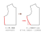

這一節，我們單獨談 c——側邊那根斜斜的褶子。特別把 c 拉出來講的原因是：c 不只是腰線的事，它還牽動袖子的袖襱那一圈（手臂根部的洞）。
袖襱是可以往下、再往下開的——因為人需要活動度。一件非常合身的衣服，活動度必然受限。這也是我一再叮嚀「剛開始做衣服，要很習慣做樣品來測試」的原因。
直接從版型一步做成成品，是非常、非常資深的設計師或版師才辦得到的事——因為他們背後有大量的支撐：他們已經做錯過非常多東西了，所以才能一步到位，畫出正確的東西。正如我們常看繪師，不曉得為什麼他就是不用打草稿，但眼睛、嘴巴都長在該長的位置上——那是大量練習的結果。服裝，也是同樣的道理。
所以無論做什麼，都一定要先做樣品、嘗試，然後大膽地去修改——照你看到的邏輯去修：不夠就挖大一點點、前片看起來太胖就稍微修一點腰身、再慢慢把形狀縮小。這才是學習原型版需要的方式跟理由。
回來講 c。擴版擴到一個大小，你會發現——腋下太大了，風會從袖襱的洞灌進來。沒有人想要這樣。這時候要修的，可能不只是側腰身，而是連袖襱都要稍微修掉一點點。
那反過來，如果挖太深了呢？一口氣往下挖了 3 公分，發現挖過頭了——無妨，補片。
做版的時候紙已經剪掉了，有沒有關係？沒有關係。在底下再墊一張紙，用膠帶把那張紙跟裁片貼起來，然後把線照原樣重畫、把它補回來。版型本就可以修修補補，沒有什麼非一步到位不可。剛開始學習的時候，修版子是再正常不過的事：加一點、再減一點；剪完之後發現還是錯，就再加、繼續貼紙就好。不要害怕去修改它。
然後 c 的部分，有一個很要緊的提醒——不要一口氣扣太多。c 的褶子收起來之後，側縫是一條非常明顯的斜線，而這條斜線，直接左右你正面看衣服的輪廓。
如果你的 c 收得非常斜——譬如一口氣扣個 5 公分——那會變成：腋下是往外推的，到了腰的部分，卻突然直直地往內收 5 公分，側面的輪廓整個凹進去。這可能正是你要的效果，也可能你會嫌它不好看——個人評斷、動手測試。我自己不太推薦這麼做，但有一些非常誇張的造型，或許會這麼用。
所以沒有絕對值，只能說：做嘗試的時候，稍微留意一下這個部分。這便是我們把側邊這根斜線的褶子，單獨挑出來講的原因。
